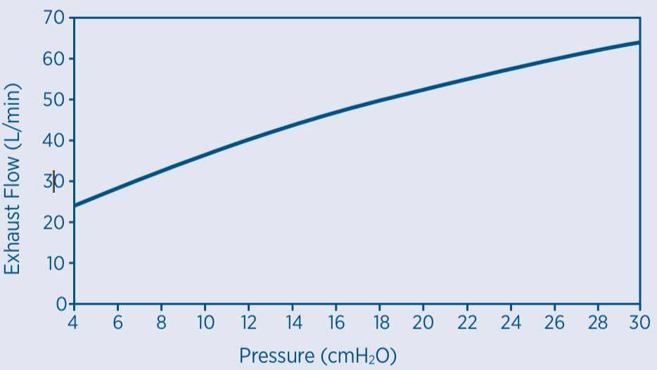

If pressure readings and/or additional oxygen are required, an Oxygen/Pressure Port Connector is available (REF 900HC452). Please contact your healthcare provider.
The F&P Vitera Full Face mask has exhaust holes to expel the air that you exhale from the mask. It is important that these exhaust holes are not blocked by any object. This controlled leak ensures all exhaled CO2 is expelled from the mask.
| Pressure (cmH2O) | 4 | 6 | 8 | 10 | 12 | 14 | 16 | 18 | 20 | 22 | 24 | 26 | 28 | 30 |
|---|---|---|---|---|---|---|---|---|---|---|---|---|---|---|
| Flow (L/min) | 24 | 28 | 32 | 36 | 40 | 43 | 47 | 50 | 53 | 55 | 58 | 60 | 62 | 64 |
Due to manufacturing variations, the exhaust flow rates may vary from the nominal values shown above.

The F&P Vitera Full Face mask and accessories are not made with natural rubber latex or DEHP. The mask should be replaced no later than 12 months after the date of first use.
Store dry mask in clean conditions out of direct sunlight. Storage temperature: -20 to 50°C (-4 to 122°F).